| Our February Foibles |
|
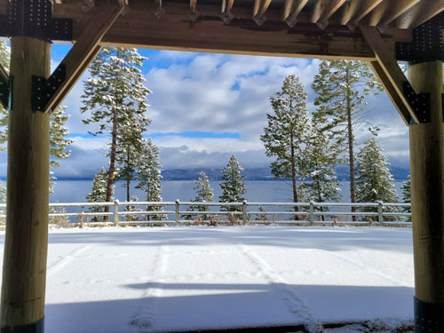 |
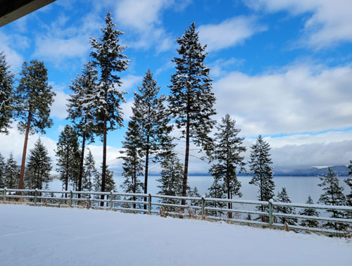 |
| I started the month by attending my very first quilting retreat.
It was great! The location was beautiful too, Glacier Bible Camp in Lakeside, MT. |
The lodge was right on the banks of Flathead Lake |
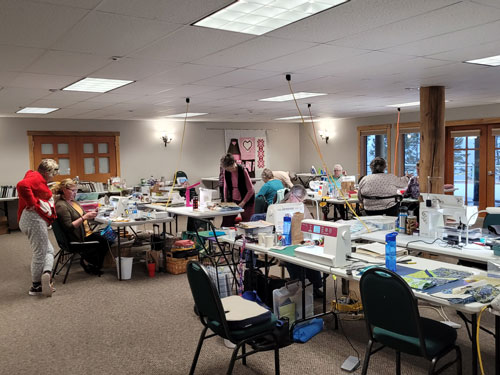 The sewing room was very spacious, well-lit, and comfortable. |
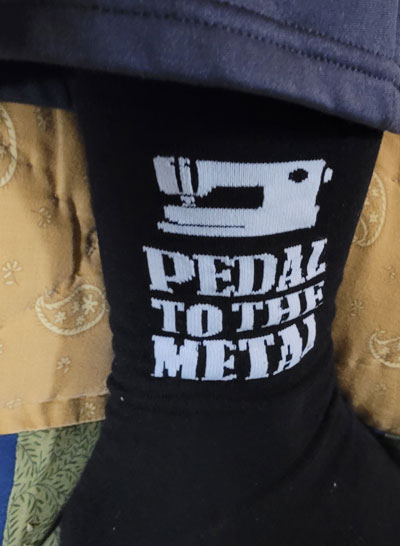 |
| Mom gave me these sewing socks for Christmas, my friends loved them! | |
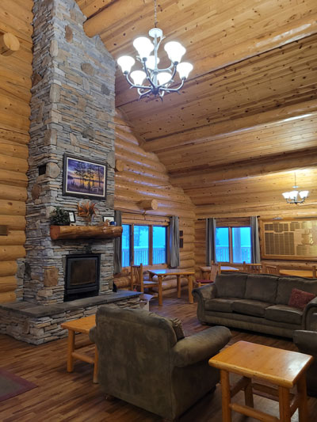 |
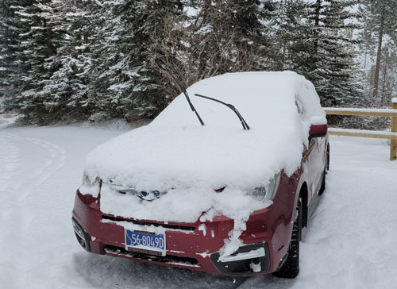 We got a lot of snow in Lakeside over the weekend, but Eureka was all clear. |
| A lounge room off of the main dining hall. It was lovely. | |
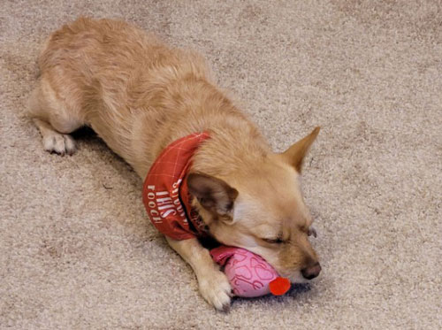 |
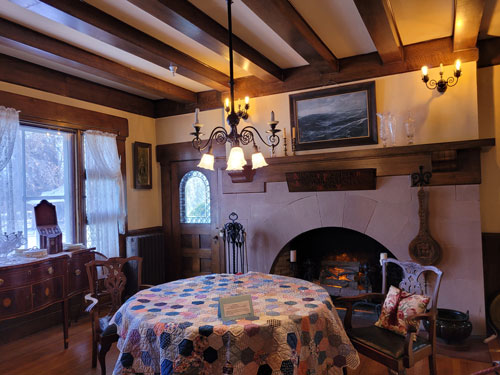 |
| I was given this little stuffed animal as a retreat gift, but it has been confiscated. | The following weekend I dropped Eric at the climbing gym and I went to
the Conrad Mansion to see their antique quilt show. It was lovely. |
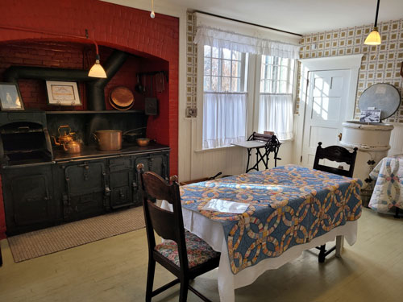 |
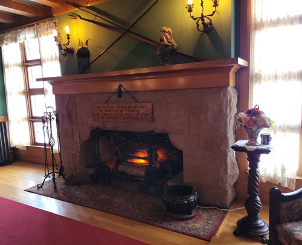 |
| They added quilts to every room of the house so the tour was twice as interesting. | The huge rocks that make up this fireplace were so impressive. |
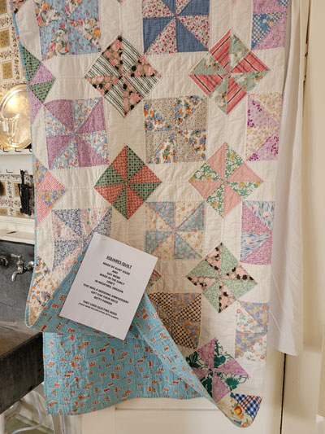 |
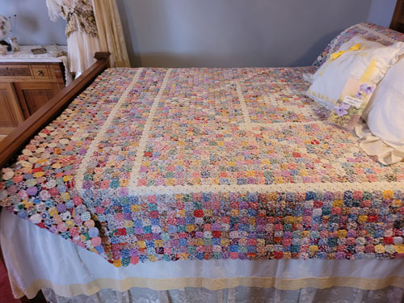 This tiny yo-yo quilt was SO impressive! This would have taken so very long to make. |
| One of my favorite quilts I saw there. | |
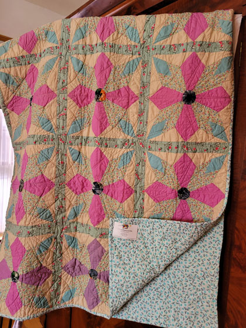 I thought this was a very cool pattern, someone was |
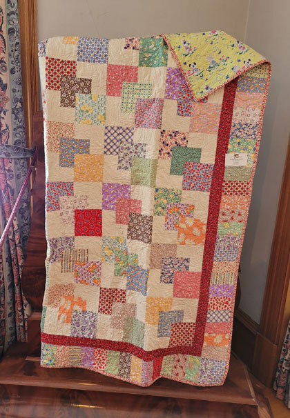 |
| I loved this pattern so much that I made my own version of this quilt the following week. | |
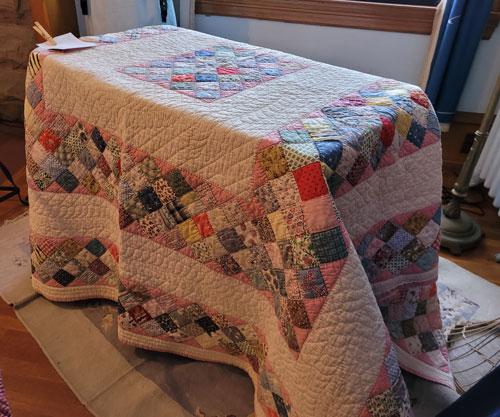 |
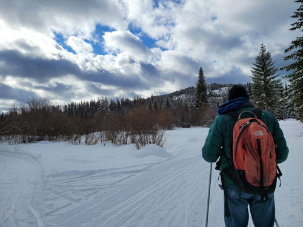 |
| This is another layout that I've never seen before. This show was certainly worth the trip! | Family Fun Day - Cross Country Skiing at Dog Creek Lodge |
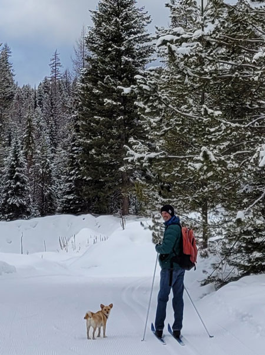 |
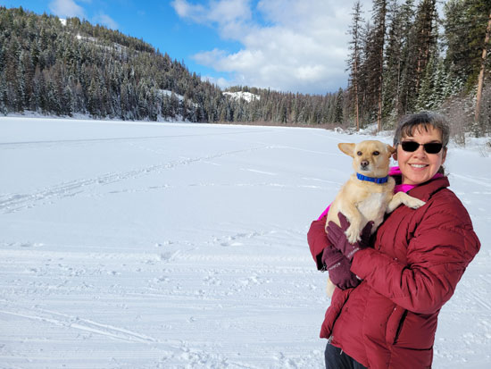 Buddy loved cross-country skiing because that meant Eric and I finally
could go as fast as Buddy |
| This dog-friendly cross-country ski place is so nice! We had a great time here. | |
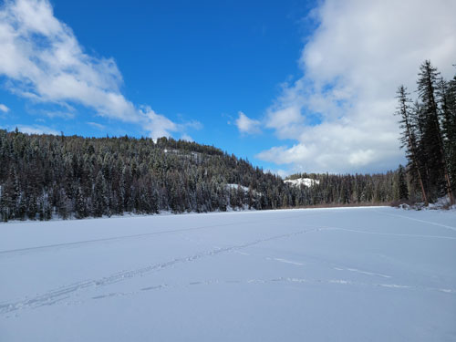 A frozen lake we saw during our session. |
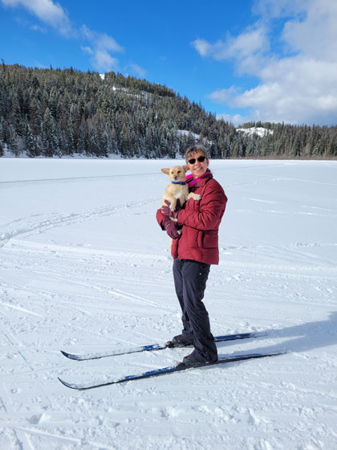 |
| Me & the Bud-ster. If he looks nervous it's because I fell about
20 times that day. He figured out the meaning of "watch out" that day! |
|
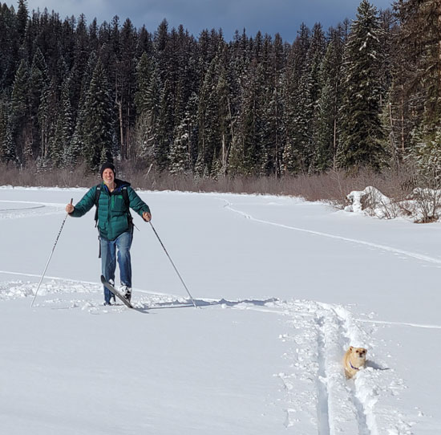 |
|
| Here Buddy has a case of what we call "Crazy Brain."
Sometimes he loses his mind and just takes off running at full speed in any random direction. |
He's so fast in "Crazy Brain" mode that I can't even get him in the shot! |
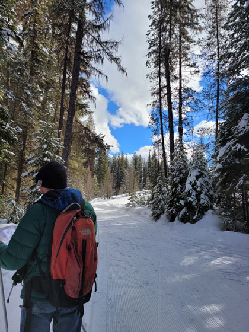 |
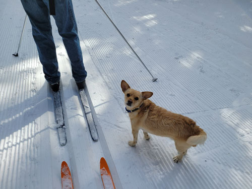 |
| It was a really beautiful day. | Buddy kept a close eye on me. I think it was to make sure I didn't land on him. |
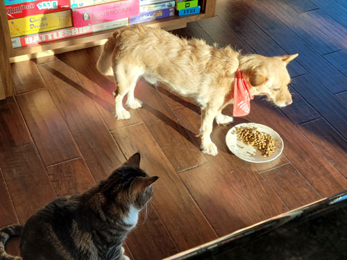 This is how most eating times go for Buddy. He gives Lily a
sidelong glare as she |
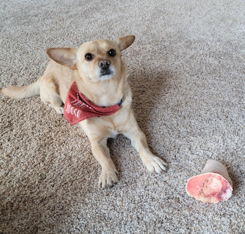 |
| Proud owner of a big bone from the butcher shop. | |
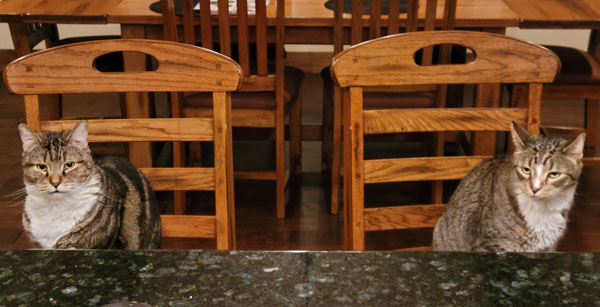 The service is terrible at this joint, I've been waiting for half an hour to be served! |
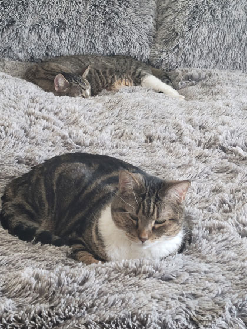 |
| I got new bedding in order to bribe the cats into sleeping with us. It worked! | |
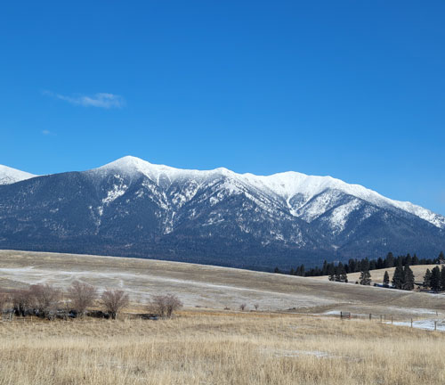 |
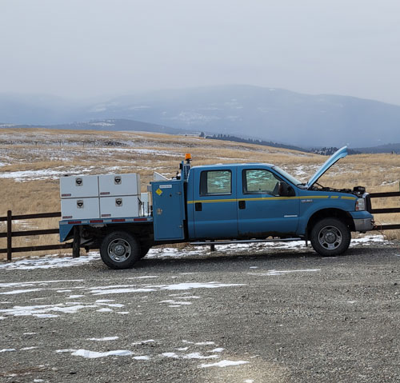 |
| I always have to document the clear sky days in winter. It's so pretty! | Eric's latest bargain. Bought from a Canadian auction, converted into
US dash controls, behold "Billy", our new trailer-hauling truck. |
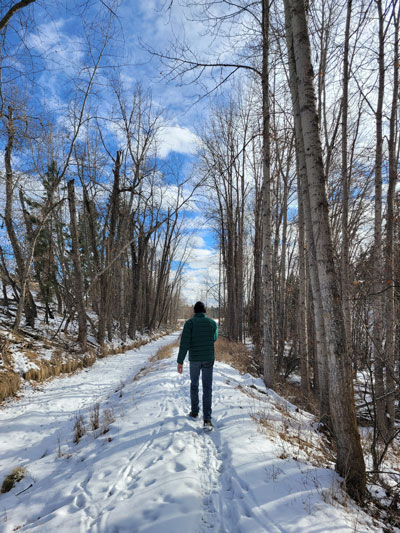 |
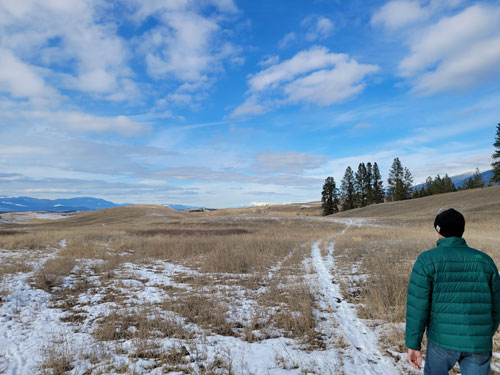 Taking a different route back home from our typical path. Eric likes to mix things up. |
| Our daily walk often goes like this - me 10 feet behind Eric who is on the phone and totally absorbed in his conversation. |
|
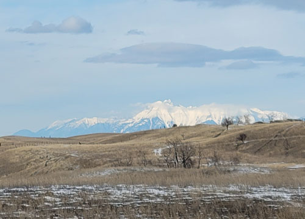 The Canadian Rockies were saying hello that day. |
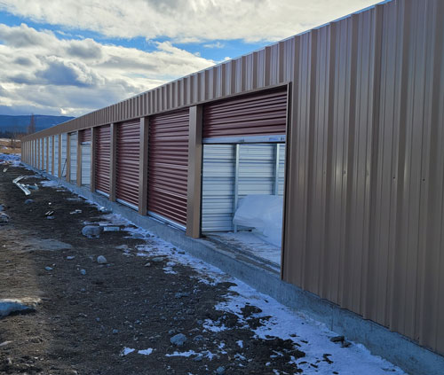 |
| Eric has been spending lots of time on Eureka Mini Storage, his latest
business venture with brother Lucas. |
|
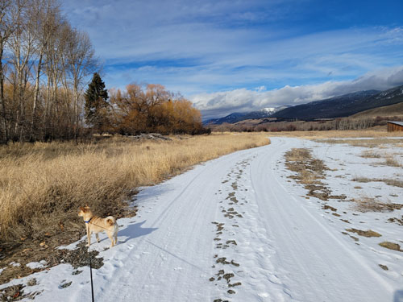 |
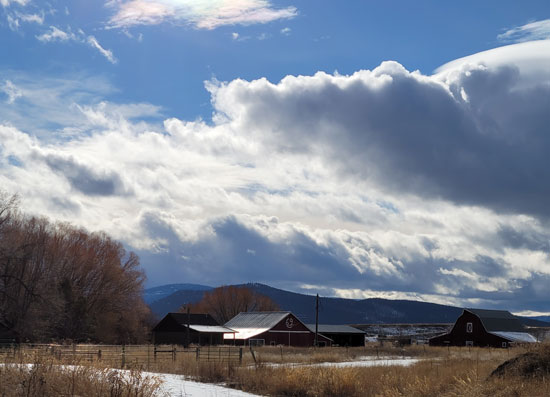 |
| Taking Buddy for a walk on a trail north of town. | The 69 Ranch. This used to be a huge ranch, one of the original ranches in the valley I think. |
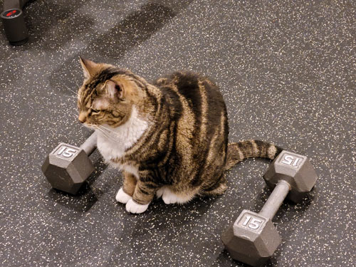 |
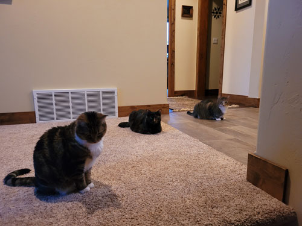 |
| I've finally gotten back into working out regularly in our basement
gym. Lily is a pretty constant workout partner. I can't do kettle bell workouts when the cats are around, I'm too afraid of beaning them on the head! |
It's rare to get a picture of all three cats in one place. Here they
are waiting for me to come upstairs and feed them. |
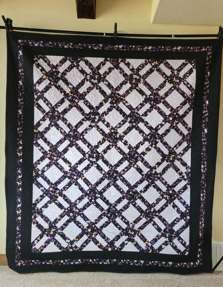 |
|
| I don't usually force pictures of my quilts on people, but this was one of
my favorites. The lavender bits were sparkly. It was beautiful! |
|